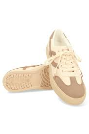

Produk 1: Batik Modern

[overflow: visible]
Batik Modern adalah perpaduan motif tradisional dengan sentuhan kontemporer. Terbuat dari bahan katun premium yang adem dan nyaman dipakai. Cocok untuk acara formal maupun santai. Tersedia berbagai ukuran dan warna. Setiap helai dibuat dengan teknik cap dan tulis sehingga menghasilkan detail yang unik. Produk ini sudah melalui proses pewarnaan alami yang ramah lingkungan. Dengan membeli batik ini, Anda turut melestarikan warisan budaya Indonesia. Dapatkan diskon 10% untuk pembelian pertama melalui website kami. Batik Modern juga bisa dijadikan kado spesial untuk orang terkasih. Tersedia motif parang, kawung, dan mega mendung. Tersedia juga layanan custom sesuai permintaan. Segera miliki batik berkualitas dengan harga terjangkau. Kami melayani pengiriman ke seluruh Indonesia dan mancanegara.
Batik Modern adalah perpaduan motif tradisional dengan sentuhan kontemporer. Terbuat dari bahan katun premium yang adem dan nyaman dipakai. Cocok untuk acara formal maupun santai. Tersedia berbagai ukuran dan warna. Setiap helai dibuat dengan teknik cap dan tulis sehingga menghasilkan detail yang unik. Produk ini sudah melalui proses pewarnaan alami yang ramah lingkungan. Dengan membeli batik ini, Anda turut melestarikan warisan budaya Indonesia. Dapatkan diskon 10% untuk pembelian pertama melalui website kami. Batik Modern juga bisa dijadikan kado spesial untuk orang terkasih. Tersedia motif parang, kawung, dan mega mendung. Tersedia juga layanan custom sesuai permintaan. Segera miliki batik berkualitas dengan harga terjangkau. Kami melayani pengiriman ke seluruh Indonesia dan mancanegara.
Produk 2: Kopi Gayo Premium

Produk 3: Sepatu Sneakers Urban

[overflow: scroll]
Sneakers Urban dirancang untuk gaya hidup aktif dengan desain kekinian. Material upper menggunakan kanvas dan sintetis berkualitas tinggi sehingga ringan dan kuat. Sol sepatu terbuat dari karet non-slip yang memberikan kenyamanan saat berjalan jauh. Tersedia berbagai warna: hitam, putih, navy, dan merah marun. Ukuran dari 36 hingga 44. Dilengkapi insole empuk yang dapat dilepas dan dicuci. Cocok dipakai untuk kuliah, kerja, hangout, atau olahraga ringan. Sneakers ini juga memiliki ventilasi yang baik sehingga kaki tidak mudah lembab. Dengan harga terjangkau, Anda mendapatkan produk yang setara dengan merek internasional. Setiap pembelian dilengkapi dengan tas penyimpanan eksklusif. Tersedia juga limited edition dengan motif kolaborasi seniman lokal. Dapatkan diskon spesial untuk pembelian via aplikasi.
Sneakers Urban dirancang untuk gaya hidup aktif dengan desain kekinian. Material upper menggunakan kanvas dan sintetis berkualitas tinggi sehingga ringan dan kuat. Sol sepatu terbuat dari karet non-slip yang memberikan kenyamanan saat berjalan jauh. Tersedia berbagai warna: hitam, putih, navy, dan merah marun. Ukuran dari 36 hingga 44. Dilengkapi insole empuk yang dapat dilepas dan dicuci. Cocok dipakai untuk kuliah, kerja, hangout, atau olahraga ringan. Sneakers ini juga memiliki ventilasi yang baik sehingga kaki tidak mudah lembab. Dengan harga terjangkau, Anda mendapatkan produk yang setara dengan merek internasional. Setiap pembelian dilengkapi dengan tas penyimpanan eksklusif. Tersedia juga limited edition dengan motif kolaborasi seniman lokal. Dapatkan diskon spesial untuk pembelian via aplikasi.
Produk 4: Tote Bag Kanvas

[overflow: auto]
Tote Bag Kanvas terbuat dari bahan katun tebal yang kuat dan ramah lingkungan. Ukuran 40x35 cm, cukup untuk membawa laptop, buku, dan belanjaan. Desain simpel dengan berbagai pilihan warna dan motif. Tali panjang yang nyaman disandang di bahu. Cocok untuk aktivitas sehari-hari, belanja, atau ke kampus. Tote bag ini dapat dilipat sehingga mudah disimpan saat tidak dipakai. Tersedia juga varian dengan tambahan saku depan. Produk handmade dari pengrajin lokal dengan kualitas jahitan rapi. Dapat dicuci tanpa khawatir luntur. Dengan membeli tote bag ini, Anda turut mengurangi penggunaan plastik sekali pakai. Tersedia juga layanan sablon untuk kebutuhan promosi atau kado. Harga mulai dari Rp 50.000. Gratis ongkir untuk wilayah Jabodetabek. Pesan sekarang dan dapatkan bonus gantungan kunci eksklusif.
Tote Bag Kanvas terbuat dari bahan katun tebal yang kuat dan ramah lingkungan. Ukuran 40x35 cm, cukup untuk membawa laptop, buku, dan belanjaan. Desain simpel dengan berbagai pilihan warna dan motif. Tali panjang yang nyaman disandang di bahu. Cocok untuk aktivitas sehari-hari, belanja, atau ke kampus. Tote bag ini dapat dilipat sehingga mudah disimpan saat tidak dipakai. Tersedia juga varian dengan tambahan saku depan. Produk handmade dari pengrajin lokal dengan kualitas jahitan rapi. Dapat dicuci tanpa khawatir luntur. Dengan membeli tote bag ini, Anda turut mengurangi penggunaan plastik sekali pakai. Tersedia juga layanan sablon untuk kebutuhan promosi atau kado. Harga mulai dari Rp 50.000. Gratis ongkir untuk wilayah Jabodetabek. Pesan sekarang dan dapatkan bonus gantungan kunci eksklusif.